Application n°3
library(knitr)
library(dplyr, quietly = TRUE,warn.conflicts = F)
library(car,warn.conflicts = F,quietly=T)
library(sf)
library(mapsf)
library(RColorBrewer)L’objectif de la présente analyse est d’analyser un tableau de données individuelles permettant de décrire le niveau de vie des ménages en fonction d’un certain nombre d’indicateurs endogènes ou exogènes.
A. DONNEES
Le jeu de données est un échantillon de variables relatives aux ménages du Bénin lors du RP 2013. Il s’agit plus précisément d’une extraction par tirage au sort de 100 ménages dans chacun des 546 arrondissements du Bénin. Le tirage au sort a été effectué en se limitant aux ménages composés d’au moins deux personnes, dont le chef de ménage est marié ou en union libre et dont les variables chosies ne comportent pas de valeurs manquantes ou non renseignés. La base de sondage se compose donc d’1.305 millions de ménages sur les 2 millions que compte le Bénin à cette date. L’échantillon comporte exactement 54600 lignes (100 pour chacun des 546 arrondissements).
Les variables ont été anonymisées en supprimant le numéro d’identification des ménages du recensement et en le remplaçant par le code de l’arrondissement suivi d’un chiffre de 001 à 100. Les variables les plus discriminantes ont vu leur nombre de modalité réduit.
Importation
On importe les données
don <- readRDS("BEN-MEN-2013/BEN-MEN-2013-SAMPLE.RDS")
kable(head(don), caption = "Premières lignes du tableau")| ID | WGT | DEP | DEP_NAME | COM | COM_NAME | ARR | ARR_NAME | URBA | DEP_CHEF | COM_CHEF | COM_CHEF_DIST | DEP_CHEF_DIST | NAT_CHEF_DIST | statoc | tailmen | locnais | datnais | age | sexe | etud5 | radio | telev | hifi | parab | magne | cddvd | frigo | cuisi | foyam | ferre | clima | venti | lit | matel | faumo | ordi | inter | elgen | bicyc | motoc | voitu | barqu | telfix | telmob | equip_tot | equip_acp | |
|---|---|---|---|---|---|---|---|---|---|---|---|---|---|---|---|---|---|---|---|---|---|---|---|---|---|---|---|---|---|---|---|---|---|---|---|---|---|---|---|---|---|---|---|---|---|---|---|
| 7 | 01101_001 | 37.58 | 01 | ALIBORI | 011 | BANIKOARA | 01101 | FOUNOUNGO | 0 | 0 | 0 | 23.30885 | 55.21384 | 572.8043 | PropFam | 4 | 011 | 1987 | 26 | M | 1.Aucun | FALSE | FALSE | FALSE | FALSE | FALSE | FALSE | FALSE | FALSE | FALSE | FALSE | FALSE | FALSE | FALSE | FALSE | FALSE | FALSE | FALSE | FALSE | TRUE | FALSE | FALSE | FALSE | FALSE | FALSE | 1 | -1.1496591 |
| 39 | 01101_002 | 37.58 | 01 | ALIBORI | 011 | BANIKOARA | 01101 | FOUNOUNGO | 0 | 0 | 0 | 23.30885 | 55.21384 | 572.8043 | PropFam | 7 | 011 | 1978 | 35 | M | 1.Aucun | TRUE | FALSE | FALSE | FALSE | FALSE | FALSE | FALSE | FALSE | FALSE | FALSE | FALSE | FALSE | FALSE | FALSE | FALSE | FALSE | FALSE | FALSE | TRUE | TRUE | FALSE | FALSE | FALSE | FALSE | 3 | -0.6338360 |
| 45 | 01101_003 | 37.58 | 01 | ALIBORI | 011 | BANIKOARA | 01101 | FOUNOUNGO | 0 | 0 | 0 | 23.30885 | 55.21384 | 572.8043 | PropFam | 6 | 011 | 1982 | 31 | M | 1.Aucun | TRUE | FALSE | FALSE | FALSE | FALSE | FALSE | FALSE | FALSE | FALSE | FALSE | FALSE | FALSE | TRUE | FALSE | FALSE | FALSE | FALSE | FALSE | TRUE | FALSE | FALSE | FALSE | FALSE | TRUE | 4 | -0.3559969 |
| 76 | 01101_004 | 37.58 | 01 | ALIBORI | 011 | BANIKOARA | 01101 | FOUNOUNGO | 0 | 0 | 0 | 23.30885 | 55.21384 | 572.8043 | PropInd | 9 | 011 | 1970 | 43 | M | 1.Aucun | TRUE | FALSE | FALSE | FALSE | FALSE | FALSE | FALSE | FALSE | FALSE | FALSE | FALSE | FALSE | TRUE | FALSE | FALSE | FALSE | FALSE | FALSE | TRUE | TRUE | FALSE | FALSE | FALSE | TRUE | 5 | -0.0904709 |
| 91 | 01101_005 | 37.58 | 01 | ALIBORI | 011 | BANIKOARA | 01101 | FOUNOUNGO | 0 | 0 | 0 | 23.30885 | 55.21384 | 572.8043 | PropFam | 5 | 011 | 1983 | 30 | M | 1.Aucun | FALSE | FALSE | FALSE | FALSE | FALSE | FALSE | FALSE | FALSE | FALSE | FALSE | FALSE | FALSE | FALSE | FALSE | FALSE | FALSE | FALSE | FALSE | FALSE | FALSE | FALSE | FALSE | FALSE | FALSE | 0 | -1.1499543 |
| 115 | 01101_006 | 37.58 | 01 | ALIBORI | 011 | BANIKOARA | 01101 | FOUNOUNGO | 0 | 0 | 0 | 23.30885 | 55.21384 | 572.8043 | PropFam | 8 | 011 | 1988 | 25 | M | 1.Aucun | TRUE | FALSE | FALSE | FALSE | TRUE | FALSE | FALSE | FALSE | FALSE | FALSE | FALSE | FALSE | TRUE | FALSE | FALSE | FALSE | FALSE | FALSE | TRUE | TRUE | FALSE | FALSE | FALSE | FALSE | 5 | -0.2158661 |
sum(don$WGT)[1] 1305188Liste des variables
Le tableau comporte 47 variables
STRATES
ID : identifiant anonyme du ménage
WGT : poids du ménage
POSITION GEOGRAPHIQUE
DEP : code du département
DEP_NAME : nom du département
COM : code de la commune
COM_NAME : nom de la commune
ARR : code de l’arrondissement
ARR_NAME : nom de l’arrondissement
URBA : statut de l’arrondissement (0 = rural, 1 = urbain)
DEP_CHEF : arrondissement situé au chef-lieu du département (0 = non, 1 = oui)
COM_CHEF : arrondissement situé au chef-lieu de la commune (0 = non, 1 = oui)
COM_CHEF_DIST : distance de l’arrondissement au chef-lieu de sa commune (en km)
DEP_CHEF_DIST : distance de l’arrondissement au chef-lieu de son département (en km)
NAT_CHEF_DIST : distance de l’arrondissement à l’aéroport de Cotonu (en km)
STRUCTURE DU MENAGE
statoc : statut d’occupation (Propriété individuelle ou familiale, locataire, autre)
tailmen : nombre de personnes recensées dans le ménage
ATTRIBUTS DU CHEF DE MENAGE
locnais : code de la commune de naissance (ou du département ou du pays étranger)
datnais : année de naissance
age : âge en différence de millésime
sexe : sexe
etud5 : niveau d’étude maximal (ramené à 5 modalités)
EQUIPEMENT DU MENAGE (présence ou absence)
radio : poste de radio
telev : poste de télévision
hifi : chaîne HIFI
parab : parabole
magne : magnetoscope
cddvd : lecteur de CD-DVD
frigo : réfrigérateur
cuisi : cuisinière
foyam : foyer aménagé
ferre : fer à repasser
clima : climatiseur
venti : betilateur
lit : lit
matel : matelas
faumo : fauteuril moderne
ordi : ordinateur
inter : accès internet
elgen : générateur électrique
bicyc : bicyclette
motoc : motcyclette
voitu : coiture
barqu : barque, pirogue
telfix: téléphone fixe (au moins une ligne)
telmob: téléphone mobile (au moins un abonnement)
SYNTHESE DES EQUIPEMENTS
equip_tot : nombre total d’équipements différents (0 à 24)
equip_acp : coordonnées sur le 1er axe factoriel d’une ACP sur les 24 équipements.
Fonds de carte
Nous disposons de quatre fonds de carte correspondant au découpage du Bénin à chacune des échelles d’analyse
BEN0<-readRDS("BEN-MEN-2013/BEN-ADM0.RDS")
BEN1<-readRDS("BEN-MEN-2013/BEN-ADM1-DIST.RDS")
BEN2<-readRDS("BEN-MEN-2013/BEN-ADM2-DIST.RDS")
BEN3<-readRDS("BEN-MEN-2013/BEN-ADM3-DIST.RDS")Il permet d’ores et déjà de repérer la position des départements, communes et arrondissements.
mf_map(BEN1, type="typo",var="DEP_NAME")
mf_map(BEN3, type="base",col=NA,border="white",lwd=0.1,add=T)
mf_map(BEN2, type="base",col=NA,border="black",lwd=0.5,add=T)
mf_map(BEN1, type="base",col=NA,border="black",lwd=2,add=T)
mf_layout(title = "Carte administrative du Bénin en 2013",
credits = "Source : EE CIST 2023",frame = T)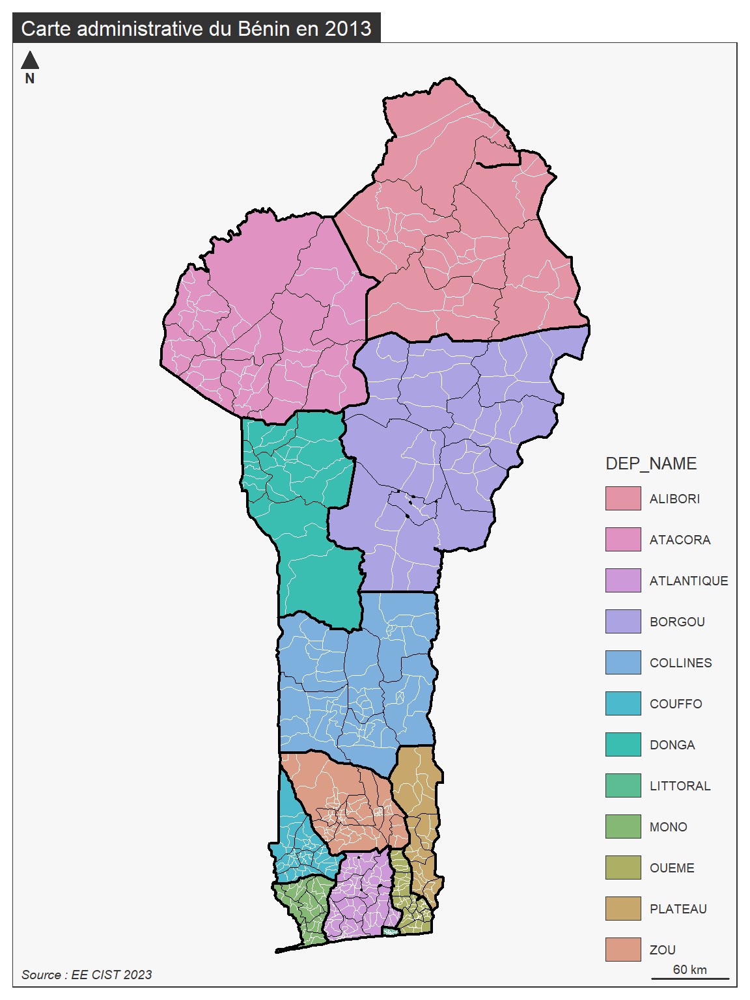
B. ANALYSE DU BENIN
On choisit de retenir l’ensemble des ménages de l’échantillon et de prendre comme variable dépendante (Y) le nombre total d’équipements dont ils disposent. La valeur minimale est de 0 et la valeur maximale de 24. La distribution est fortement dissymétrique à gauche ce qui est logique
sel<-don
sel$equip<-sel$equip_tot
hist(sel$equip,
breaks=seq(0,24,1),
col="lightyellow",
probability = T,
main="Equipements des ménages du Bénin en 2013",
sub = "Source : RP2013, INS Bénin, échantillon stratifié par arrondissements",
xlab="Nombre d'équipements",
ylab= "Probabilité"
)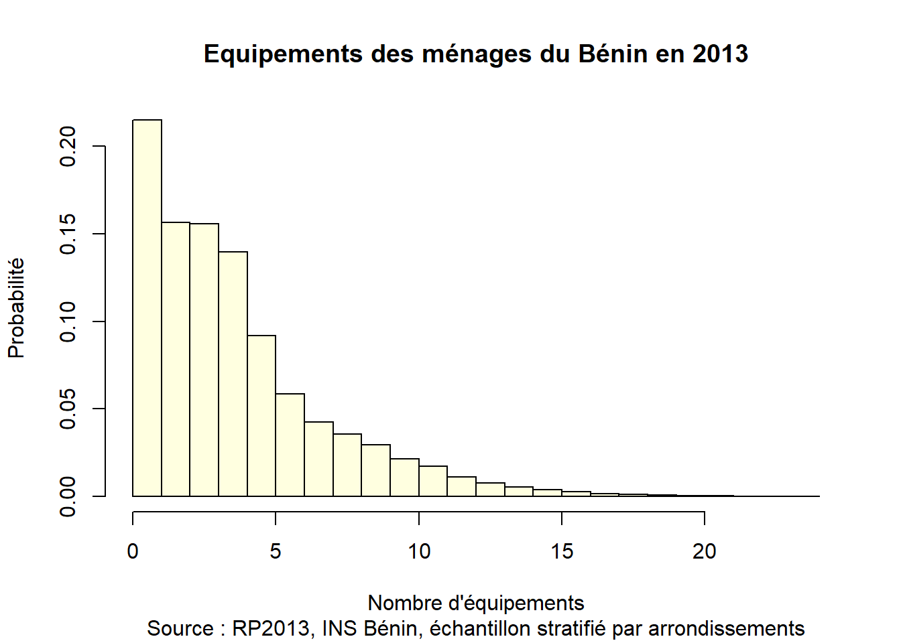
summary(sel$equip) Min. 1st Qu. Median Mean 3rd Qu. Max.
0.000 2.000 3.000 4.049 5.000 24.000 - Commentaire : le nombre moyen d’équipement des ménages est environ de 4 mais la médiane est de 3 et le mode de 0. La distribution est donc très fortement dissymétrique à gauche avec un grand nombre de ménages n’ayant que des équipements de base (radio, bicyclette, téléphone mobile,) et une très petite minorité accédant à tous les équipements y compris les plus rares et les plus coûteux (connexion internet, ordinateur, …)
STRUCTURE DU MENAGE
On peut modéliser tout d’abord l’effet de variables structurelles liées à la taille du ménage et au statut d’occupation du logement.
Taille du ménage
X<-log(sel$tailmen)
Y<-sel$equip
nameX<-"Taille du ménage (log)"
nameY<-"Nombre d'équipements (0 à 24) "
titre<-"Equipement des ménages du Bénin en 2013"
source<-"Source : RP2013, INS Bénin"
mod<-lm(Y~X)
plot(X,Y ,
main=titre,
sub = source,
xlab=nameX,
ylab=nameY)
abline(mod, col="red")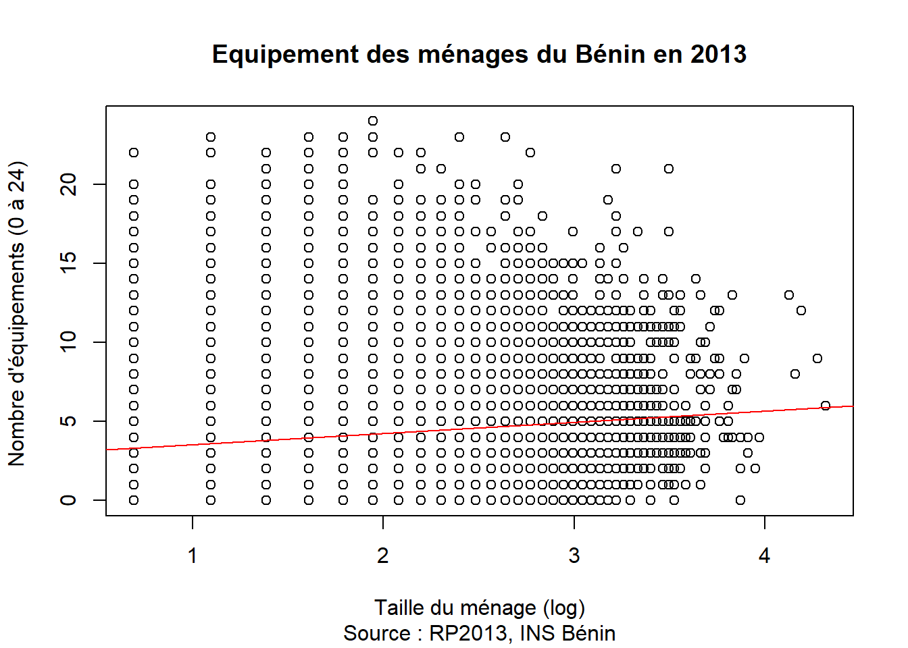
summary(mod)
Call:
lm(formula = Y ~ X)
Residuals:
Min 1Q Median 3Q Max
-5.5649 -2.2868 -0.7923 1.2188 19.8085
Coefficients:
Estimate Std. Error t value Pr(>|t|)
(Intercept) 2.80348 0.04569 61.35 <2e-16 ***
X 0.71331 0.02492 28.63 <2e-16 ***
---
Signif. codes: 0 '***' 0.001 '**' 0.01 '*' 0.05 '.' 0.1 ' ' 1
Residual standard error: 3.264 on 54598 degrees of freedom
Multiple R-squared: 0.01479, Adjusted R-squared: 0.01477
F-statistic: 819.6 on 1 and 54598 DF, p-value: < 2.2e-16- Commentaire : Relation significative mais à très faible pouvoir explicatif. Le nombre d’équipement augmente de 0.7 chaque fois que le logarithme du nombre de personnes présentes augmente de 1. Un ménage de 10 personnes devrait donc avoir 2.8 + 0.7*log(10) = 4.4 équipements.
2.8+0.7*log(10)[1] 4.41181Statut d’occupation
X<-sel$statoc
Y<-sel$equip
nameX<-"Statut d'occupation"
nameY<-"Nombre d'équipements (0 à 24) "
titre<-"Equipement des ménages du Bénin en 2013"
source<-"Source : RP2013, INS Bénin"
mod<-lm(Y~X)
boxplot(Y~X,
main=titre,
sub = source,
xlab=nameX,
ylab=nameY,
col="lightyellow")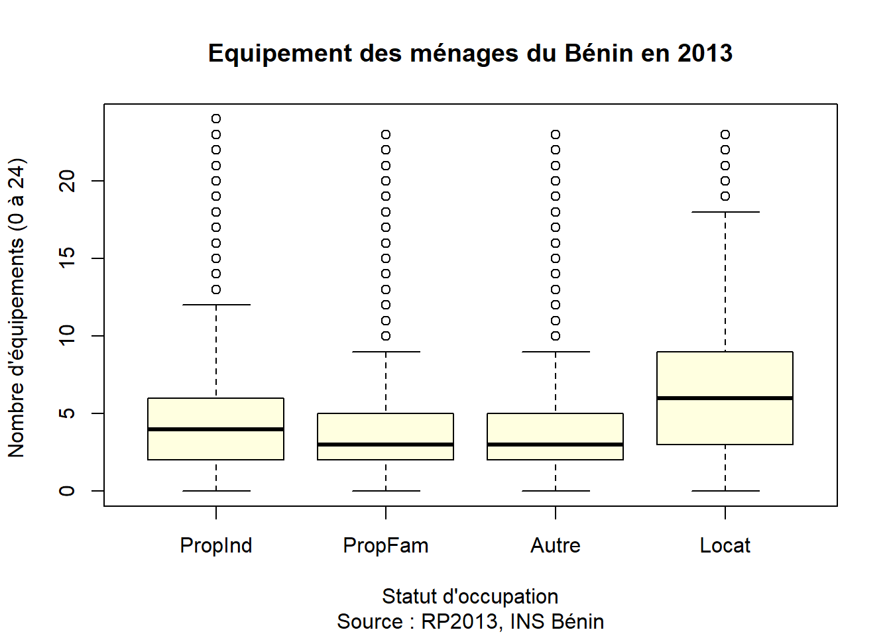
summary(mod)
Call:
lm(formula = Y ~ X)
Residuals:
Min 1Q Median 3Q Max
-6.4322 -2.3494 -0.5342 1.4658 19.6506
Coefficients:
Estimate Std. Error t value Pr(>|t|)
(Intercept) 4.34941 0.02382 182.56 < 2e-16 ***
XPropFam -0.81522 0.03009 -27.10 < 2e-16 ***
XAutre -0.48134 0.07372 -6.53 6.65e-11 ***
XLocat 2.08282 0.05362 38.84 < 2e-16 ***
---
Signif. codes: 0 '***' 0.001 '**' 0.01 '*' 0.05 '.' 0.1 ' ' 1
Residual standard error: 3.191 on 54596 degrees of freedom
Multiple R-squared: 0.05882, Adjusted R-squared: 0.05877
F-statistic: 1137 on 3 and 54596 DF, p-value: < 2.2e-16- Commentaire : Avantage significatif des locataires (p <0.001) qui ont en moyenne 2 équipements de plus que les propriétaires individuels. Mais cela révèle sans doute indirectement un effet urbain-rural.
ATTRIBUTS DU CHEF DE MENAGE
Une seconde série de caractéristique concernant les attributs du chef de ménage permet de tester d’autres reltions.
Sexe
X<-sel$sexe
Y<-sel$equip
nameX<-"Sexe"
nameY<-"Nombre d'équipements (0 à 24) "
titre<-"Equipement des ménages du Bénin en 2013"
source<-"Source : RP2013, INS Bénin"
mod<-lm(Y~X)
boxplot(Y~X,
main=titre,
sub = source,
xlab=nameX,
ylab=nameY,
col="lightyellow")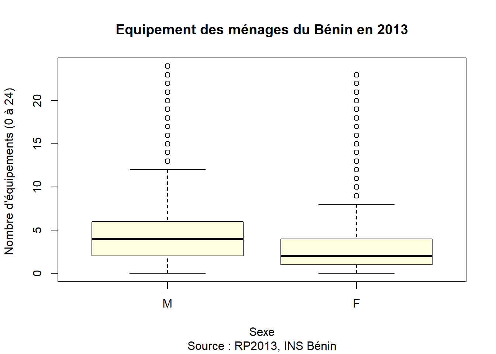
summary(mod)
Call:
lm(formula = Y ~ X)
Residuals:
Min 1Q Median 3Q Max
-4.3115 -2.3115 -0.6331 1.3669 20.3669
Coefficients:
Estimate Std. Error t value Pr(>|t|)
(Intercept) 4.31151 0.01506 286.31 <2e-16 ***
XF -1.67845 0.03807 -44.08 <2e-16 ***
---
Signif. codes: 0 '***' 0.001 '**' 0.01 '*' 0.05 '.' 0.1 ' ' 1
Residual standard error: 3.232 on 54598 degrees of freedom
Multiple R-squared: 0.03437, Adjusted R-squared: 0.03435
F-statistic: 1943 on 1 and 54598 DF, p-value: < 2.2e-16- Commentaire : Les ménages dont le chef est une femme ont en moyenne 1.7 équipements de moins que les ménages dont le chef est un homme (4.3). La différence est significative.
Classe d’âge
sel$age5<-cut(sel$age, breaks=c(18,29,39,49,59,100),include.lowest = T)
levels(sel$age5)<-c("18-29", "30-39","40-49","50-59","60+")
X<-sel$age5
Y<-sel$equip
nameX<-"Classe d'âge"
nameY<-"Nombre d'équipements (0 à 24) "
titre<-"Equipement des ménages du Bénin en 2013"
source<-"Source : RP2013, INS Bénin"
mod<-lm(Y~X)
boxplot(Y~X,
main=titre,
sub = source,
xlab=nameX,
ylab=nameY,
col="lightyellow")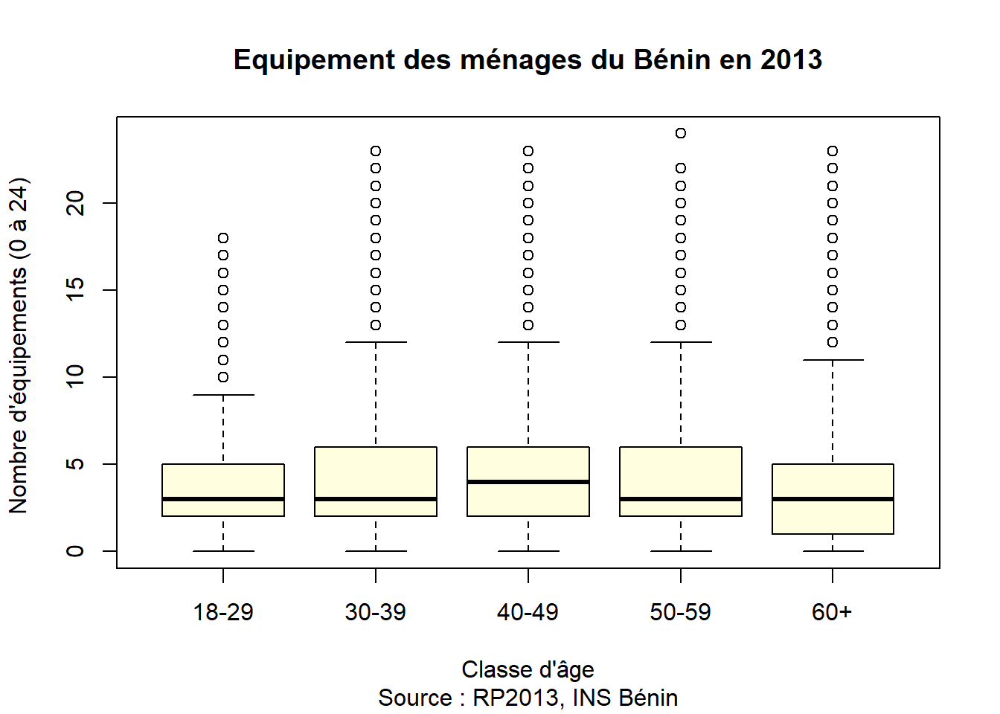
summary(mod)
Call:
lm(formula = Y ~ X)
Residuals:
Min 1Q Median 3Q Max
-4.286 -2.218 -0.752 1.493 19.796
Coefficients:
Estimate Std. Error t value Pr(>|t|)
(Intercept) 3.75199 0.03470 108.134 <2e-16 ***
X30-39 0.46621 0.04292 10.862 <2e-16 ***
X40-49 0.53391 0.04509 11.840 <2e-16 ***
X50-59 0.45242 0.05097 8.876 <2e-16 ***
X60+ -0.24495 0.05008 -4.891 1e-06 ***
---
Signif. codes: 0 '***' 0.001 '**' 0.01 '*' 0.05 '.' 0.1 ' ' 1
Residual standard error: 3.276 on 54595 degrees of freedom
Multiple R-squared: 0.007785, Adjusted R-squared: 0.007713
F-statistic: 107.1 on 4 and 54595 DF, p-value: < 2.2e-16- Commentaire : Relation significative mais à très faible pouvoir explicatif. Elle met en valeur le fait que les ménages les moins bien équipés sont ceux dont le chef est très jeune (moins de 30 ans) ou très âgé (plus de 60 ans).
Niveau d’étude
X<-sel$etud5
Y<-sel$equip
nameX<-"Niveau d'étude"
nameY<-"Nombre d'équipements (0 à 24) "
titre<-"Equipement des ménages du Bénin en 2013"
source<-"Source : RP2013, INS Bénin"
mod<-lm(Y~X)
boxplot(Y~X,
main=titre,
sub = source,
xlab=nameX,
ylab=nameY,
col="lightyellow")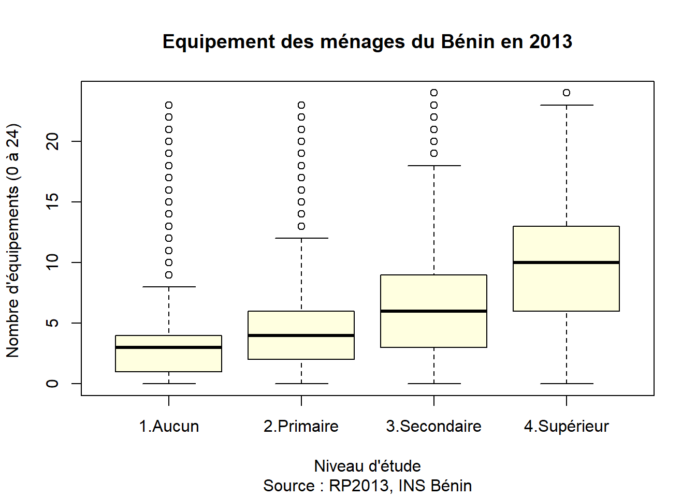
summary(mod)
Call:
lm(formula = Y ~ X)
Residuals:
Min 1Q Median 3Q Max
-9.5163 -2.1405 -0.3599 1.4995 19.8595
Coefficients:
Estimate Std. Error t value Pr(>|t|)
(Intercept) 3.14052 0.01590 197.47 <2e-16 ***
X2.Primaire 1.35999 0.03236 42.03 <2e-16 ***
X3.Secondaire 3.21940 0.03682 87.44 <2e-16 ***
X4.Supérieur 6.37579 0.07843 81.30 <2e-16 ***
---
Signif. codes: 0 '***' 0.001 '**' 0.01 '*' 0.05 '.' 0.1 ' ' 1
Residual standard error: 2.946 on 54596 degrees of freedom
Multiple R-squared: 0.1974, Adjusted R-squared: 0.1974
F-statistic: 4477 on 3 and 54596 DF, p-value: < 2.2e-16- Commentaire : Relation très significative et à très fort pouvoir explicatif comparée aux précédentes (r2 = 19.7%). Il s’agit du facteur le plus déterminant parmi ceux qui ont été retenus. Le niveau d’étude sert évidemment de proxy à d’autres variables telles que le revenu, la situation professionnelle, etc.
POSISTION GEOGRAPHIQUE
Nous proposons maintenant une suite d’analyse portant sur les déterminants géographiques en distinguant deux cas selon que la variable explicative est catégorielle ou selon qu’elle correspond à un effect continu d’éloignement.
Déterminants territoriaux
Les déterminants territoriaux correspondent au cas où la variable explicative est catégorielle et où l’effet sur le ménage est lié à son appartenance à un type d’espace. Ceci nous permet d’identifier trois variables :
- URBA : l’arrondissement où le ménage est situé est-il déclaré “rural” ou “urbain” par l’état ?
- DEF_CHEF : l’arrondissement où le ménage est situé est-il le siège d’un chef-lieu de département
- COM_CHEF : l’arrondissement où le ménage est situé est-il le siège d’un chef-lieu de commune
map0<-BEN0
map1<-BEN1
map2<-BEN2
map3<-BEN3
map3$URBA<-as.factor(map3$URBA)
levels(map3$URBA)<-c("Rural","Urbain")
map2ctr<-st_centroid(map3[map3$COM_CHEF==1 & map3$DEP_CHEF==0,])
map1ctr<-st_centroid(map3[ map3$DEP_CHEF==1,])
mf_map(map3,type="typo",var="URBA",pal=c("lightyellow","orange"), border="gray",lwd=0.3,leg_title = "Type d'espace")
mf_map(map2,type="base",col=NA, border="black",lwd=1, add=T)
mf_map(map1,type="base",col=NA, border="black",lwd=2, add=T)
mf_map(map2ctr,type="base",pch=20,col="blue",add=T,cex=0.4)
#mf_label(map2ctr,var = "COM_NAME", col="blue",pos=1, cex=0.4, overlap=F)
mf_map(map1ctr,type="base",pch=15,col="red",add=T, cex=0.6)
mf_label(map1ctr,var = "COM_NAME", col="red",pos=1,cex = 0.5,overlap = F)
mf_layout(title = "Communes et arrondissements du Borgou",
credits = "Source : EE CIST 2023",frame = T)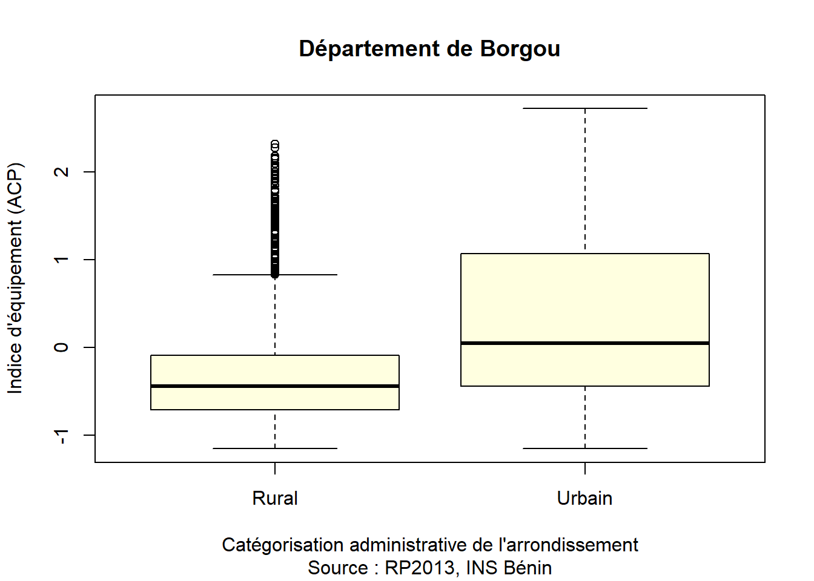
Urbain/Rural
L’attribution du caractère urbain ou rural à un arrondissement est le résultat d’une décision administrative de l’état. Elle se traduit dans le recensement de 2013 par l’ajout d’un code “5” en quatrième position du code de l’arrondissement. Il peut y avoir plusieurs arrondissements “urbains” à l’intérieur d’une même commune. Il peut également arriver que l’ensemble d’une commune soit composée d’arrondissements urbain comme c’est le cas pour Parakou. Les arrondissements urbains contigus portent en général le même nom suivi d’un numéro (PARAKOU 01, PARAKOU 02, PARAKOU 03, PARAKOU 04) et leur réunion forment implicitement une “ville” dans une logique administrative. Mais les contours de ces villes sont très différents de ceux que l’on pourrait obtenir par des sources non administratives telles que les images de télédétection utilisées par la base Africapolis où des données détaillées de mobilité à l’échelon indiviuel (non accessibles pour des raisons de secret statistique).
Qu’elle reflète ou non une réalité morphologique (continuité du bâti) ou fonctionnelle (solde migratoire positif) n’est cependant pas ici la question principale. En revanche il peut être intéressant de se demander si les arrondissements urbains bénéficient d’un traitement privilégié de l’état, conduisant par exemple celui-ci à mettre en place des politiques publiques qui privilégient ces lieux en matière de déploiement d’infrastructures (écoles, lycées, cliniques, …) ce qui peut attirer des populations plus riches ou plus éduquées, dotées d’un meilleur équipement.
sel$URBA<-as.factor(sel$URBA)
levels(sel$URBA)<-c("Rural","Urbain")
X<-sel$URBA
Y<-sel$equip
nameX<-"Catégorisation administrative de l'arrondissement"
nameY<-"Nombre d'équipements (0 à 24) "
titre<-"Equipement des ménages du Bénin en 2013"
source<-"Source : RP2013, INS Bénin"
mod<-lm(Y~X)
boxplot(Y~X,
main=titre,
sub = source,
xlab=nameX,
ylab=nameY,
col="lightyellow")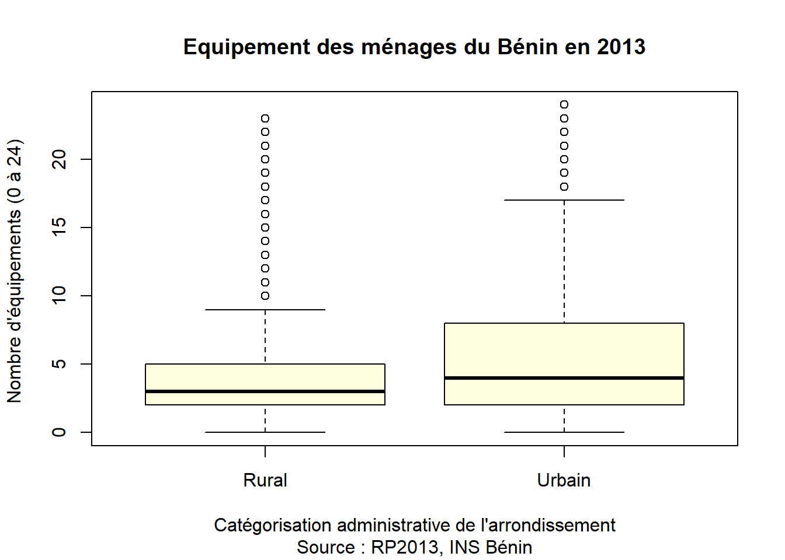
summary(mod)
Call:
lm(formula = Y ~ X)
Residuals:
Min 1Q Median 3Q Max
-5.5341 -2.5341 -0.6171 1.3829 19.3829
Coefficients:
Estimate Std. Error t value Pr(>|t|)
(Intercept) 3.61709 0.01551 233.22 <2e-16 ***
XUrbain 1.91705 0.03268 58.67 <2e-16 ***
---
Signif. codes: 0 '***' 0.001 '**' 0.01 '*' 0.05 '.' 0.1 ' ' 1
Residual standard error: 3.19 on 54598 degrees of freedom
Multiple R-squared: 0.0593, Adjusted R-squared: 0.05928
F-statistic: 3442 on 1 and 54598 DF, p-value: < 2.2e-16- Commentaire : La relation obtenue est très significative (p<0.001) et son pouvoir explicatif est plutôt élevé (r2 = 6%) bien qu’inférieur à celui du nveau d’étude.
Fonction administrative
Dans une logique légèrement différente, on peut se demander si les arrondissements qui remplissent des fonction de centralité administrative bénéficient d’un traitement privilégié de la part de l’état. Dans le cas du Bénin, tous les arrondissements qui sont centre de commune sont automatiquement déclarés urbains. Mais l’inverse n’est pas vrai et des arrondissements urbains peuvent ne pas être le siège d’un chef-lieu de commune ou de département.
sel$CHEF<-as.factor(sel$COM_CHEF+sel$DEP_CHEF)
levels(sel$CHEF)<-c("Aucune","Centre de commune", "Centre de département")
X<-sel$CHEF
Y<-sel$equip
nameX<-"Fonction administraive"
nameY<-"Nombre d'équipements (0 à 24) "
titre<-"Equipement des ménages du Bénin en 2013"
source<-"Source : RP2013, INS Bénin"
mod<-lm(Y~X)
boxplot(Y~X,
main=titre,
sub = source,
xlab=nameX,
ylab=nameY,
col="lightyellow")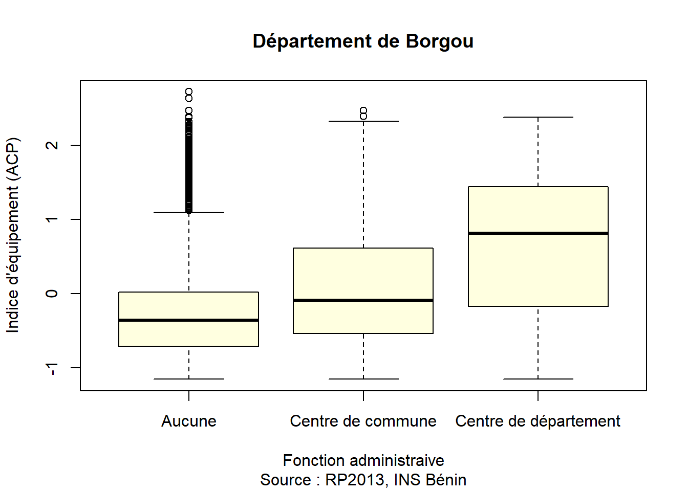
summary(mod)
Call:
lm(formula = Y ~ X)
Residuals:
Min 1Q Median 3Q Max
-6.2175 -1.9261 -0.9261 1.0739 20.0739
Coefficients:
Estimate Std. Error t value Pr(>|t|)
(Intercept) 3.92614 0.01509 260.27 <2e-16 ***
XCentre de commune 0.60863 0.04324 14.08 <2e-16 ***
XCentre de département 2.29136 0.09551 23.99 <2e-16 ***
---
Signif. codes: 0 '***' 0.001 '**' 0.01 '*' 0.05 '.' 0.1 ' ' 1
Residual standard error: 3.267 on 54597 degrees of freedom
Multiple R-squared: 0.01335, Adjusted R-squared: 0.01331
F-statistic: 369.4 on 2 and 54597 DF, p-value: < 2.2e-16- Commentaire : La relation obtenue est très significative (p<0.001) même si son pouvoir explicatif est plus limité (r2 = 1.3%) que celui de l’opposition urbain-rural . On note un net accroissement du niveau d’équipement des ménages avec le niveau administraif de l’arrondissement où ils sont localisés (+0.6 pour les ménages résidant dans un chef lieu de commune et +2.3 pourceux qui sont localisés dans un chef lieu de département)
Accessibilité
Les déterminants spatiaux correspondent au cas où la variable explicative est de type quantitatif continu et où l’effet sur le ménage est lié à son accessibilité à une ressource c’est-à-dire à l’influence de la distance.
par(mfrow=c(1,3))
mypal<-brewer.pal(8,"RdYlGn")
## Distance à la commune
mybreaks=c(0,1,2,4,8,16,32,64,128)
mf_map(map3,
type="choro",
var="COM_CHEF_DIST",
pal=mypal,
breaks=mybreaks,
border="gray",
lwd=0.3,
leg_title = "Distance(km)",
leg_val_rnd = 0)
mf_map(map2,type="base",col=NA, border="black",lwd=2, add=T)
mf_map(map2ctr,type="base",pch=20,col="black",add=T)
mf_label(map2ctr,var = "COM_NAME", col="black",pos=1,cex=0.6)
#mf_map(map1ctr,type="base",pch=20,col="black",add=T, cex=1)
#mf_label(map1ctr,var = "DEP_NAME", col="black",pos=1)
mf_layout(title = "Accessibilité Communale",
credits = "Source : EE CIST 2023",frame = T)
## Distance au dept
mybreaks=c(0,4,8,16,32,64,128,256,512)
mf_map(map3,
type="choro",
var="DEP_CHEF_DIST",
pal=mypal,
breaks=mybreaks,
border="gray",
lwd=1,
leg_title = "Distance (km)",
leg_val_rnd = 0)
#mf_map(map2,type="base",col=NA, border="black",lwd=1, add=T)
mf_map(map1,type="base",col=NA, border="black",lwd=2, add=T)
mf_map(map1ctr,type="base",pch=15,col="black",add=T, cex=1)
mf_label(map1ctr,var = "DEP_NAME", col="black",pos=1)
mf_layout(title = "Accessibilité Départementale",
credits = "Source : EE CIST 2023",frame = T)
## Distance à la capitale nationale
map0ctr<-st_centroid(map3[map3$NAT_CHEF_DIST==0,])
mybreaks=c(0,8,16,32,64,128,256,512,1024)
mf_map(map3,
type="choro",
var="NAT_CHEF_DIST",
pal=mypal,
breaks=mybreaks,
border="gray",
lwd=1,
leg_title = "Distance (km)",
leg_val_rnd = 0)
#mf_map(map2,type="base",col=NA, border="black",lwd=1, add=T)
mf_map(map0,type="base",col=NA, border="black",lwd=2, add=T)
mf_map(map0ctr,type="base",pch=15,col="black",add=T, cex=2)
mf_label(map0ctr,var = "COM_NAME", col="black",pos=1)
mf_layout(title = "Accessibilité Nationale",
credits = "Source : EE CIST 2023",frame = T)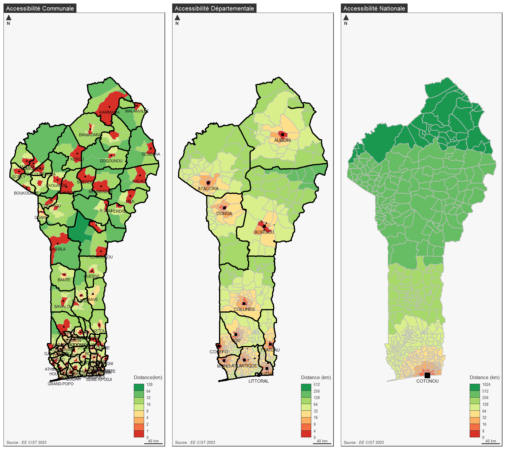
Accessibilité communale
On utilise une fonction racine carré pour modéliser l’effet de la distance. Pour une distance égale à zéro, la constante donnera l’effet du chefl-lieu de commune.
sel$ACC_COM<-sqrt(sel$COM_CHEF_DIST)
X<-sel$ACC_COM
Y<-sel$equip
nameX<-"Distance au centre de la commune (racine carrée)"
nameY<-"Nombre d'équipements (0 à 24) "
titre<-"Equipement des ménages du Bénin en 2013"
source<-"Source : RP2013, INS Bénin"
mod<-lm(Y~X)
plot(X,Y ,
pch=20,
cex=0.4,
main=titre,
sub = source,
xlab=nameX,
ylab=nameY)
abline(mod, col="red")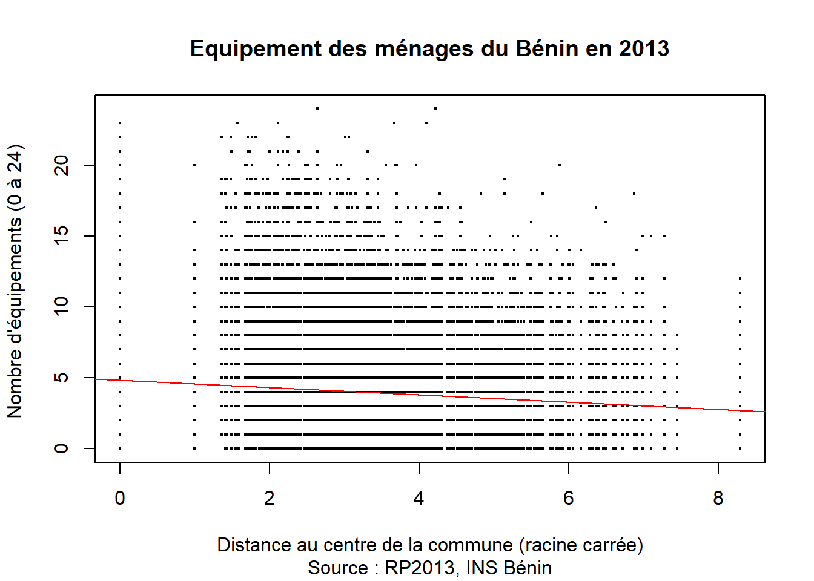
summary(mod)
Call:
lm(formula = Y ~ X)
Residuals:
Min 1Q Median 3Q Max
-4.838 -2.245 -0.773 1.417 20.247
Coefficients:
Estimate Std. Error t value Pr(>|t|)
(Intercept) 4.838526 0.028328 170.81 <2e-16 ***
X -0.257530 0.008043 -32.02 <2e-16 ***
---
Signif. codes: 0 '***' 0.001 '**' 0.01 '*' 0.05 '.' 0.1 ' ' 1
Residual standard error: 3.258 on 54598 degrees of freedom
Multiple R-squared: 0.01843, Adjusted R-squared: 0.01842
F-statistic: 1025 on 1 and 54598 DF, p-value: < 2.2e-16- Commentaire : La relation obtenue est très significative (p<0.001) même si son pouvoir explicatif est plus limité (r2 = 1.8%). Ceci s’explique tout d’abord par l’incertitude de mesure : la distance utilisée est l’éloignement entre les arrondissements et non pas entre l’individu et le centre de sa commune. Mais aussi par la diversité des ménages en matière d’équipement quelle que soit la distance au centre.
Accessibilité départementale
sel$ACC_DEP<-sqrt(sel$DEP_CHEF_DIST)
X<-sel$ACC_DEP
Y<-sel$equip
nameX<-"Distance au centre du département (racine carrée)"
nameY<-"Nombre d'équipements (0 à 24) "
titre<-"Equipement des ménages du Bénin en 2013"
source<-"Source : RP2013, INS Bénin"
mod<-lm(Y~X)
plot(X,Y ,
pch=20,
cex=0.4,
main=titre,
sub = source,
xlab=nameX,
ylab=nameY)
abline(mod, col="red")
summary(mod)
Call:
lm(formula = Y ~ X)
Residuals:
Min 1Q Median 3Q Max
-4.8445 -2.2733 -0.7454 1.4512 19.7786
Coefficients:
Estimate Std. Error t value Pr(>|t|)
(Intercept) 4.844517 0.035941 134.79 <2e-16 ***
X -0.147858 0.006152 -24.03 <2e-16 ***
---
Signif. codes: 0 '***' 0.001 '**' 0.01 '*' 0.05 '.' 0.1 ' ' 1
Residual standard error: 3.272 on 54598 degrees of freedom
Multiple R-squared: 0.01047, Adjusted R-squared: 0.01045
F-statistic: 577.6 on 1 and 54598 DF, p-value: < 2.2e-16- Commentaire : La relation obtenue demeure très significative (p<0.001) mais son pouvoir explicatif demeure limité (r2 = 1.0%).
Accessibilité Nationale
sel$ACC_NAT<-sqrt(sel$NAT_CHEF_DIST)
X<-sel$ACC_NAT
Y<-sel$equip
nameX<-"Distance à la capitale nationale (racine carrée)"
nameY<-"Nombre d'équipements (0 à 24) "
titre<-"Equipement des ménages du Bénin en 2013"
source<-"Source : RP2013, INS Bénin"
mod<-lm(Y~X)
plot(X,Y ,
pch=20,
cex=0.4,
main=titre,
sub = source,
xlab=nameX,
ylab=nameY)
abline(mod, col="red")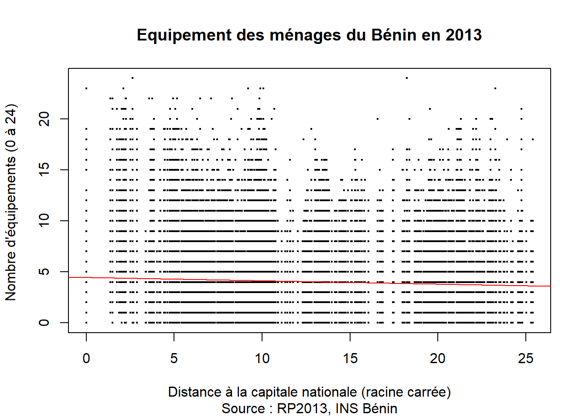
summary(mod)
Call:
lm(formula = Y ~ X)
Residuals:
Min 1Q Median 3Q Max
-4.4562 -2.2186 -0.7569 1.3006 20.1477
Coefficients:
Estimate Std. Error t value Pr(>|t|)
(Intercept) 4.45623 0.03081 144.66 <2e-16 ***
X -0.03313 0.00223 -14.86 <2e-16 ***
---
Signif. codes: 0 '***' 0.001 '**' 0.01 '*' 0.05 '.' 0.1 ' ' 1
Residual standard error: 3.282 on 54598 degrees of freedom
Multiple R-squared: 0.004025, Adjusted R-squared: 0.004007
F-statistic: 220.7 on 1 and 54598 DF, p-value: < 2.2e-16- Commentaire : La relation obtenue est très significative (p<0.001) même si son pouvoir explicatif est très limité (r2 = 0.4%). Il faut toutefois examiner le rôle de ces variables d’accessibilité lorsqu’on les combine avec les autres variables relatives aux ménages.
SYNTHESE
Variables endogène
On en retient d’abord que les variables relatives à la structure du ménage et aux attributs du chef de ménage.
mod1<-lm(data=sel, equip~log(tailmen)+statoc+sexe+age5+etud5)
summary(mod1)
Call:
lm(formula = equip ~ log(tailmen) + statoc + sexe + age5 + etud5,
data = sel)
Residuals:
Min 1Q Median 3Q Max
-11.0754 -1.8455 -0.4329 1.3331 20.6140
Coefficients:
Estimate Std. Error t value Pr(>|t|)
(Intercept) 1.67591 0.05409 30.982 < 2e-16 ***
log(tailmen) 0.88914 0.02415 36.820 < 2e-16 ***
statocPropFam -0.55877 0.02692 -20.756 < 2e-16 ***
statocAutre -0.42373 0.06566 -6.454 1.10e-10 ***
statocLocat 1.14917 0.05016 22.910 < 2e-16 ***
sexeF -0.83280 0.03520 -23.660 < 2e-16 ***
age530-39 0.36677 0.03797 9.659 < 2e-16 ***
age540-49 0.37145 0.04077 9.111 < 2e-16 ***
age550-59 0.50248 0.04589 10.949 < 2e-16 ***
age560+ 0.28754 0.04506 6.381 1.78e-10 ***
etud52.Primaire 1.32687 0.03163 41.944 < 2e-16 ***
etud53.Secondaire 3.05137 0.03697 82.528 < 2e-16 ***
etud54.Supérieur 6.00856 0.07763 77.400 < 2e-16 ***
---
Signif. codes: 0 '***' 0.001 '**' 0.01 '*' 0.05 '.' 0.1 ' ' 1
Residual standard error: 2.829 on 54587 degrees of freedom
Multiple R-squared: 0.2604, Adjusted R-squared: 0.2603
F-statistic: 1602 on 12 and 54587 DF, p-value: < 2.2e-16Anova(mod1, type="III")Anova Table (Type III tests)
Response: equip
Sum Sq Df F value Pr(>F)
(Intercept) 7680 1 959.89 < 2.2e-16 ***
log(tailmen) 10847 1 1355.71 < 2.2e-16 ***
statoc 11767 3 490.21 < 2.2e-16 ***
sexe 4479 1 559.80 < 2.2e-16 ***
age5 1136 4 35.50 < 2.2e-16 ***
etud5 91359 3 3806.05 < 2.2e-16 ***
Residuals 436762 54587
---
Signif. codes: 0 '***' 0.001 '**' 0.01 '*' 0.05 '.' 0.1 ' ' 1- Commentaire : la combinaison des déterminants sociaux aboutit à un modèle satisfaisant (r2=26%) où toutes les variables apportent une contribution significative au modèle. L’analyse de variance de type III (toutes choses égales par ailleurs) confirme le rôle central du niveau de diplôme du chef de ménage qui est de lion la variable qui contribue le plus à l’explication du niveau d’équipement. La taille du ménage joue également un rôle important ainsi que le statut d’occupation qui montre un meilleur équipement des locataires.L’influence de l’âge et du sexe est plus limitée.
Variables contextuelles
mod2<-lm(data=sel, equip~URBA+ACC_COM+ACC_DEP+ACC_NAT)
summary(mod2)
Call:
lm(formula = equip ~ URBA + ACC_COM + ACC_DEP + ACC_NAT, data = sel)
Residuals:
Min 1Q Median 3Q Max
-6.3603 -2.3168 -0.6018 1.4378 19.8409
Coefficients:
Estimate Std. Error t value Pr(>|t|)
(Intercept) 3.636340 0.047536 76.50 <2e-16 ***
URBAUrbain 2.428247 0.046287 52.46 <2e-16 ***
ACC_COM 0.221386 0.012150 18.22 <2e-16 ***
ACC_DEP -0.077063 0.007326 -10.52 <2e-16 ***
ACC_NAT -0.032419 0.002778 -11.67 <2e-16 ***
---
Signif. codes: 0 '***' 0.001 '**' 0.01 '*' 0.05 '.' 0.1 ' ' 1
Residual standard error: 3.174 on 54595 degrees of freedom
Multiple R-squared: 0.06866, Adjusted R-squared: 0.06859
F-statistic: 1006 on 4 and 54595 DF, p-value: < 2.2e-16Anova(mod2, type="III")Anova Table (Type III tests)
Response: equip
Sum Sq Df F value Pr(>F)
(Intercept) 58954 1 5851.74 < 2.2e-16 ***
URBA 27726 1 2752.11 < 2.2e-16 ***
ACC_COM 3345 1 331.99 < 2.2e-16 ***
ACC_DEP 1115 1 110.65 < 2.2e-16 ***
ACC_NAT 1372 1 136.15 < 2.2e-16 ***
Residuals 550021 54595
---
Signif. codes: 0 '***' 0.001 '**' 0.01 '*' 0.05 '.' 0.1 ' ' 1- Commentaire : le mélange des variables contextuelles est difficile à interpréter en raison des fortes redondances qu’il y a entre certaines variables explicatives. En effet la variable URBA est corrélée avec le fait d’être ou pas un centre de commune ou de département. MAlgré son pouvoir explicatif limité (r2=6.9%) le modèle met bien en valeur la combinaison des différents effets d’urbanisation et d’accessibilité. On note une inversion de l’effet d’accessibilité au chef lieu de commune qui s’explique par l’ajout des deux autres variables d’accessibilité.
Variables endogènes et contextuelles
On construit un modèle final reprenant l’ensemble des variables endogènes mais en leur ajoutant les deux mesures d’accessibilité a au centre de commune ou de district.
mod3<-lm(data=sel, equip~log(tailmen)+statoc+sexe+age5+etud5+URBA+ACC_COM+ACC_DEP+ACC_NAT)
summary(mod3)
Call:
lm(formula = equip ~ log(tailmen) + statoc + sexe + age5 + etud5 +
URBA + ACC_COM + ACC_DEP + ACC_NAT, data = sel)
Residuals:
Min 1Q Median 3Q Max
-11.2365 -1.8215 -0.3934 1.3575 20.6885
Coefficients:
Estimate Std. Error t value Pr(>|t|)
(Intercept) 1.605216 0.066453 24.155 < 2e-16 ***
log(tailmen) 0.988396 0.024501 40.342 < 2e-16 ***
statocPropFam -0.585553 0.026798 -21.851 < 2e-16 ***
statocAutre -0.537254 0.064720 -8.301 < 2e-16 ***
statocLocat 0.707877 0.050480 14.023 < 2e-16 ***
sexeF -0.922920 0.034873 -26.465 < 2e-16 ***
age530-39 0.292758 0.037436 7.820 5.37e-15 ***
age540-49 0.259819 0.040264 6.453 1.11e-10 ***
age550-59 0.362171 0.045334 7.989 1.39e-15 ***
age560+ 0.147358 0.044516 3.310 0.000933 ***
etud52.Primaire 1.143840 0.031894 35.864 < 2e-16 ***
etud53.Secondaire 2.769215 0.037352 74.137 < 2e-16 ***
etud54.Supérieur 5.556467 0.077327 71.857 < 2e-16 ***
URBAUrbain 1.496127 0.042144 35.500 < 2e-16 ***
ACC_COM 0.149466 0.010709 13.957 < 2e-16 ***
ACC_DEP -0.056129 0.006468 -8.678 < 2e-16 ***
ACC_NAT -0.028252 0.002533 -11.153 < 2e-16 ***
---
Signif. codes: 0 '***' 0.001 '**' 0.01 '*' 0.05 '.' 0.1 ' ' 1
Residual standard error: 2.784 on 54583 degrees of freedom
Multiple R-squared: 0.2837, Adjusted R-squared: 0.2835
F-statistic: 1351 on 16 and 54583 DF, p-value: < 2.2e-16Anova(mod3, type="III")Anova Table (Type III tests)
Response: equip
Sum Sq Df F value Pr(>F)
(Intercept) 4522 1 583.488 < 2.2e-16 ***
log(tailmen) 12613 1 1627.460 < 2.2e-16 ***
statoc 7867 3 338.377 < 2.2e-16 ***
sexe 5428 1 700.421 < 2.2e-16 ***
age5 686 4 22.123 < 2.2e-16 ***
etud5 70895 3 3049.204 < 2.2e-16 ***
URBA 9767 1 1260.251 < 2.2e-16 ***
ACC_COM 1510 1 194.785 < 2.2e-16 ***
ACC_DEP 584 1 75.309 < 2.2e-16 ***
ACC_NAT 964 1 124.385 < 2.2e-16 ***
Residuals 423023 54583
---
Signif. codes: 0 '***' 0.001 '**' 0.01 '*' 0.05 '.' 0.1 ' ' 1- Commentaire : Par rapport au modèle purement endogène de modélistion des comportements individuels par les attributs des ménages, le gain est assez faible en terme de qualité d’ajustement (passage de 26% à 28.3%). C’est plutôt au niveau de l’interprétation que le nouveau modèle est intéressant car il révèle que le niveau d’étude se combine étroitement dans l’explication avec l’accessibilité aux centres de commune ou de districts. Ce qui laisse soupçonner une interaction entre les deux facteurs